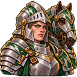
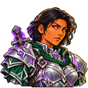
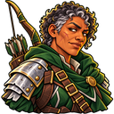
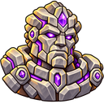
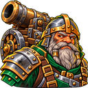
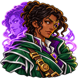

Review concepts only. The Rune Golem has a higher-clarity review version faithful to your approved design; no game art has been replaced. Comparison sheet · Style comparison
 Cataphracts
CataphractsBarracks × Foundry


 Battlemages
BattlemagesBarracks × Mage Tower


 Rangers
RangersBarracks × Merchant Hall


 Rune Golems
Rune GolemsFoundry × Mage Tower · clarity pass


 Bombard Battery
Bombard BatteryFoundry × Merchant Hall


 Illusionists
IllusionistsMage Tower × Merchant Hall
